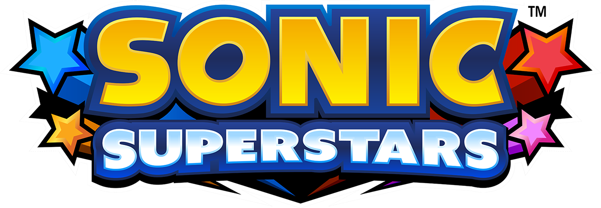

Uma nova aventura clássica! Sonic Superstars é um jogo replicando os jogos clássicos, com só fases novas e um multiplayer de até quatro pessoas.
Use os poderes das Esmeraldas do Chaos para derrotar Eggman, Fang, e a personagem nova Trip!
Alguns jogadores reclamaram de coisas como modelos e algumas peculariedades do gameplay, essa página tenta melhorar isto.
A controversia estreia da franquia nos consoles HDs, Sonic The Hedgehog (geralmente chamado de Sonic06) foi um jogo que foi lançado as pressas, com diversos bugs e problemas de otmização.
O jogo possui fases e ideias interessantes, que não foram apreciadas por causa dos problemas do jogo, porém recentemente um fã chamado de ChaosX2006 está criando um remake do jogo para computadores que consertar seus problemas.
O remake ainda não foi concluido porém grande parte das fases e personagens foi concluida.